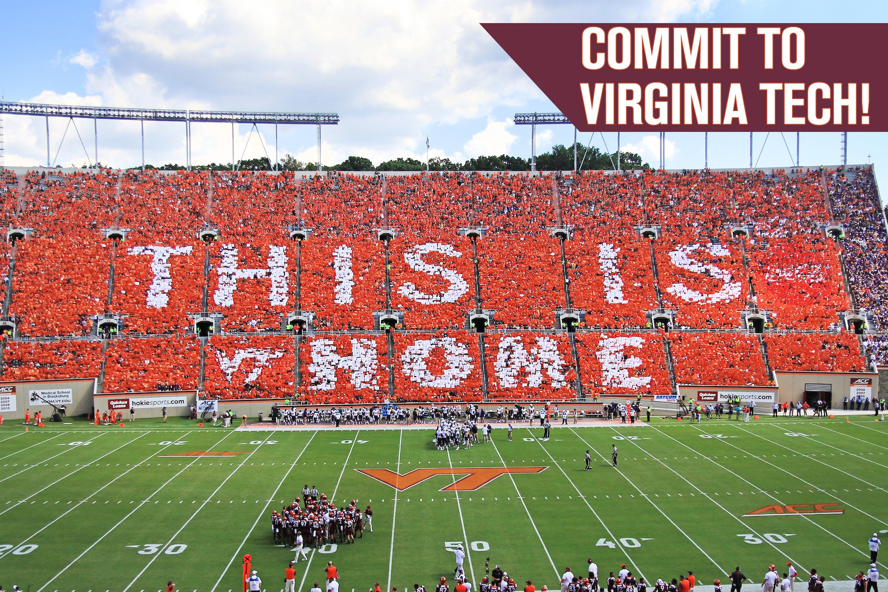

Hello
HI! I am Maddie Laycock a senior at Virginia Tech double majoring in Human Development and Communication Studies. As a senior I wanted to create a way to inform my friends and family about the classes I am enrolled in here at Virginia Tech and give my input to other students to help them in their decision making for future semesters.
For my favorite class, visual media, I am to build a website using HTML to explain to my friends and family the classes I am currently enrolled in. To the left you will find the classes I am taking this semester, and I hope it helps you to get a better understanding of what is offered here at Virginia Tech!
A little background on me. Upon graduation I am going to be an account executive at Beacon Hill in the DC area, focusing on sales. My communication skills will come into play as I build relationships with potential clients. I will be selling technology services to tech companies in the area and figured it was important to learn basic coding to understand the business of my clientele.
GO HOKIES!
